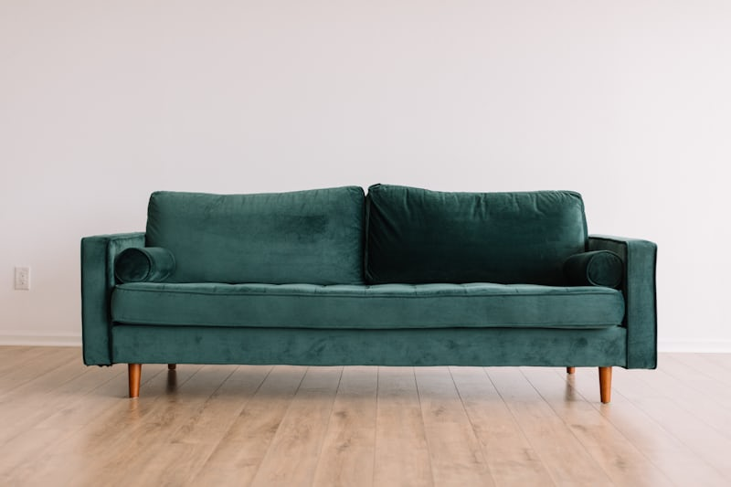
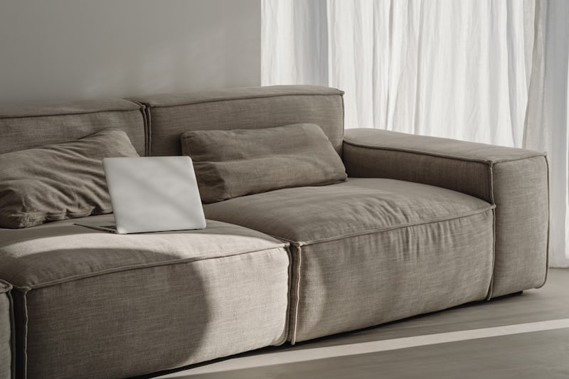

MODERN SOFAS
The art of ModernComfort
Embrace the beauty of simplicity with our Modern Sofa Series. Featuring low-profile silhouettes, tapered legs, and neutral palettes, these pieces are designed to create an airy and sophisticated atmosphere. Where high-end fashion meets everyday relaxation.

Wooden frame Sofas
A wooden frame sofa is built with a strong internal structure made of solid wood, providing durability and long-lasting support. The frame is usually covered with cushions and fabric or leather for comfort and style. These sofas are known for their strength, stability, and classic appearance. key Points: Strong and durable structure Long-lasting support Can be combined with fabric or leather Gives a classic or modern looks

Fabric Sofa
A fabric sofa is a type of sofa upholstered with cloth materials such as cotton, linen, or velvet. It is known for its comfort, softness, and wide variety of colors and designs. Fabric sofas are suitable for everyday use and add a cozy look to living spaces. key Points: Soft and comfortable Available in many colors & patterns More affordable than leather Needs regular cleaning

living room Sofa
A living room sofa is designed for the main seating area of a home where family members relax and guests are entertained. It focuses on comfort, durability, and style to suit daily use. Living room sofas are available in various designs such as sectional, fabric, or modular to match different interior themes. key Points: Comfortable for daily use Stylish and decorative Durable materials Available in many designs and sizes.